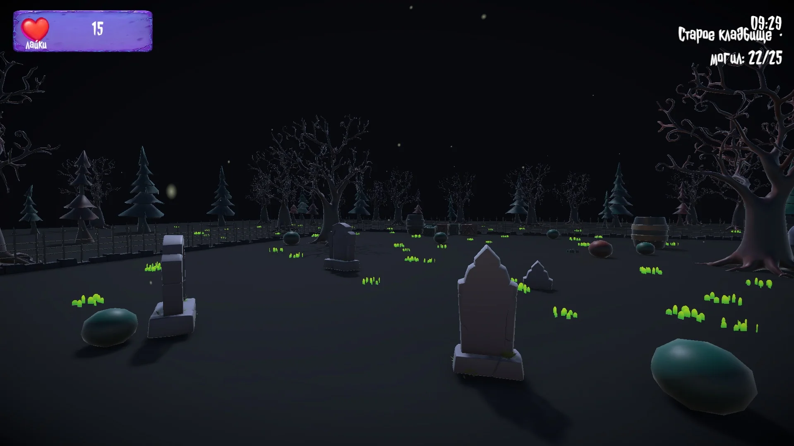
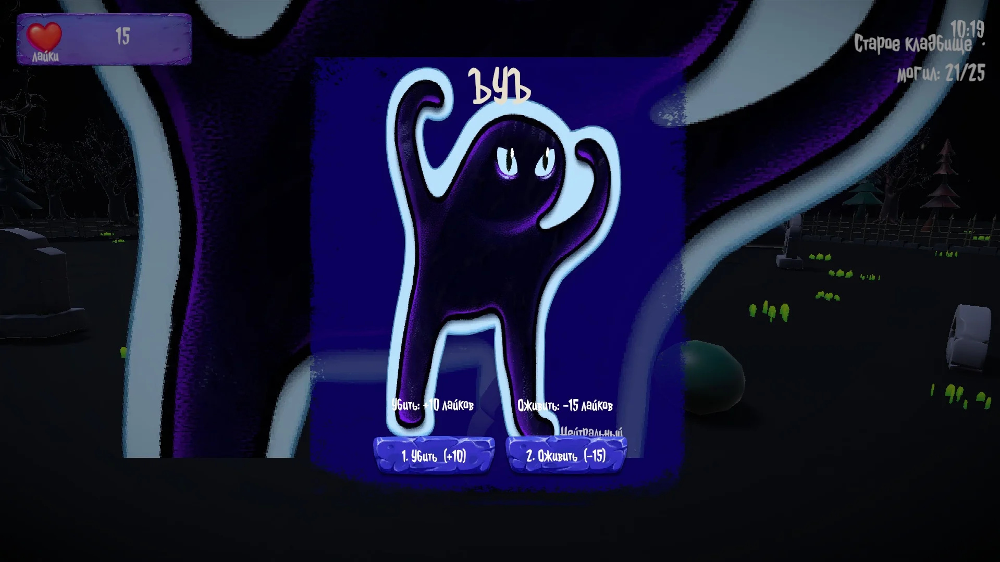

02 Галерея
Обложка, геймплей на Старом кладбище и дилемма «БУБ».



Кладбище забытых мемов · пошаговые бои · команда
Старое кладбище, таймер и счётчик могил. Копай могилы, находишь мемов — и решай: убить (+10 лайков) или оживить (−15 в пул). Дальше — пошаговые карточные бои, прокачка через дубликаты и коллекция мемов.
«Гробовщик» — игра про Старое кладбище, где каждая могила скрывает мема. Ты копаешь (держи E), находишь забытый мем — и встаёшь перед дилеммой: убить — получить +10 лайков или оживить — отдать −15 лайков в пул. Лайки — твоя валюта: таймер и счётчик могил держат темп, HUD показывает, сколько могил осталось.
После выбора начинаются пошаговые карточные бои: атака, защита, способности — ход за ходом, пока босс не повержен («Босс повержен!»). Боссы предупреждают о своих замахах: «Атака…», «Копит силы…», «Тяжёлый удар…», «Обрушение…» — читай телеграфы и отвечай вовремя.
Прокачка — через дубликаты: «Дубликат X (N коп.)» копятся в коллекцию (TAB), копии можно сжечь за лайки, а в настройках — даже стиль надгробий и громкость музыки, эффектов, UI и амбиента. Мемов в коллекции пока маловато — команда знает.
Держи E — и доставай забытый мем из-под земли.
1. Убить (+10 лайков) или 2. Оживить (−15 в пул).
Пошаговый бой с боссом: читай телеграфы и бей ходом.
Дубликаты копятся — жги лишние копии за лайки.
Все пойманные мемы — в коллекции, стиль надгробий — в настройках.
Игра сделана командой ЗамороJAMные:
Состав уточняется — поправлю, как скажешь.
Требования: Windows 10/11 (64-bit), любой современный ПК. Интернет не нужен.
Обложка, геймплей на Старом кладбище и дилемма «БУБ».


Полный билд для Windows: распакуй архив и запусти
Гробовщик/Гробовщик.exe. Тот же файл лежит на Яндекс Диске.